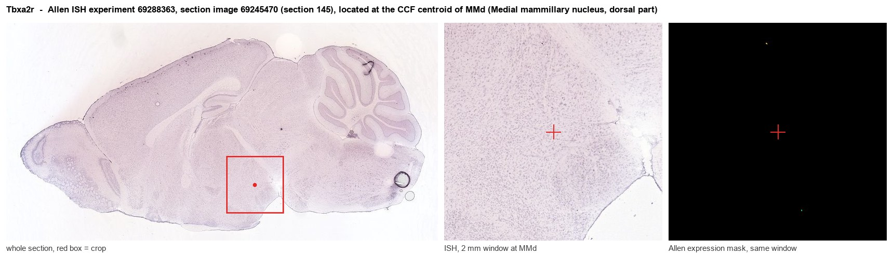
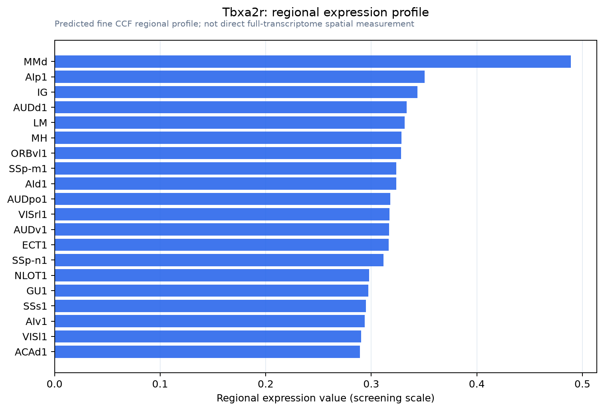

Tbxa2r
Thromboxane A2 receptor (TXA2-R) (Prostanoid TP receptor)
Spatial tier: REGION_BIASED · Class: GPCR · Top region: MMd (Medial mammillary nucleus, dorsal part) · Positive regions: 44/554
43.5Discovery Score
35.1Targetability Score
CEvidence grade C
What this means: Tbxa2r: fine CCF profile is region-biased toward MMd (top regions: MMd, AIp1, IG, AUDd1, LM); this is a discovery lead, not direct proof.
Function in MMd: evidence, prediction, innovation
- Gene function
- TBXA2R (the TP receptor) is the GPCR for thromboxane A2 and related prostanoids, signalling mainly through Gq/PLC to raise intracellular calcium and through G12/13-RhoA to remodel the cytoskeleton. It is the canonical platelet-aggregation and vasoconstriction receptor, and is the target of drugs such as seratrodast and the antagonist SQ29548.
- Region function
- The medial mammillary nucleus is the hypothalamic node of the Papez/extended hippocampal circuit: it receives subicular input via the fornix and projects through the mammillothalamic tract to the anterior thalamic nuclei, supporting theta-paced spatial and episodic memory.
- Published in this region
- inferred No region-specific literature found. In other CNS tissue TP is functional on neurons and glia: Sumimoto 2015 showed the TP agonist U-46619 promotes neurite outgrowth in cortical neurons via MAPK, and Yang 2016 showed TP stimulation drives microglial IL-1beta and NO release after ischaemia.
- Predicted function
- Prediction: in the dorsal medial mammillary nucleus TP is most likely expressed on the dense local vasculature and perivascular/microglial cells rather than on projection neurons, where it would couple prostanoid signalling to local blood flow and inflammatory tone in a nucleus that is highly vulnerable to thiamine deficiency and hypoxia. If neuronal, Gq signalling would depolarise mammillary cells and enhance burst firing. TP antagonism (SQ29548, seratrodast) should blunt inflammation-driven mammillary damage in Wernicke-Korsakoff-like thiamine-deficiency models.
- Innovation
- ★★★★☆ 4/5 Prostanoid signalling is essentially unexplored in mammillary neurons even though this nucleus is the signature lesion site of Korsakoff syndrome.
- Tools
- Antagonists SQ29548, seratrodast and ramatroban; agonist U-46619; Tbxa2r knockout mice; validated anti-TP antibodies.
- References
Direct evidence located at the region

Allen ISH experiment 69288363, section image 69245470 (section 145): the section that contains the CCF centroid of Medial mammillary nucleus, dorsal part according to the Allen image-to-atlas alignment (reference_to_image), with a 2 mm window around that point. Left: whole section, red box = window. Middle: ISH signal. Right: Allen's expression-mask view of the same window. open this image in the Allen viewer
Look it up yourself: Allen Mouse Brain ISH for Tbxa2rAllen reference atlas: MMd (structure 606826659)ABC Atlas MERFISH viewer(in the ABC Atlas choose dataset MERFISH-C57BL6J-638850-CCF, colour cells by gene "Tbxa2r" or by parcellation_substructure "MMd")All genes confined to MMd + 3-D brain
Direct spatial evidence
MERFISH REGION LOCATOR

Regional expression figure

Predicted WMB × fine-CCF profile; not direct full-transcriptome spatial measurement.
Spatial profile
Evidence and specificity
- Evidence status
- PREDICTED_FINE
- Direct sources
- None; predicted localization only
- Exclusive threshold
- 12 positive regions out of 554
- Spatial specificity
- 0.286
- Top-region fraction
- 0.047
- Filter status
- PASS
Interpretation limits
- Cell-type-to-region projection is imputed expression, not direct spatial measurement.
- Adult reference atlases do not establish stability across age, sex, strain, state, or disease.
- Transcript abundance does not guarantee protein abundance or genetic-tool performance.